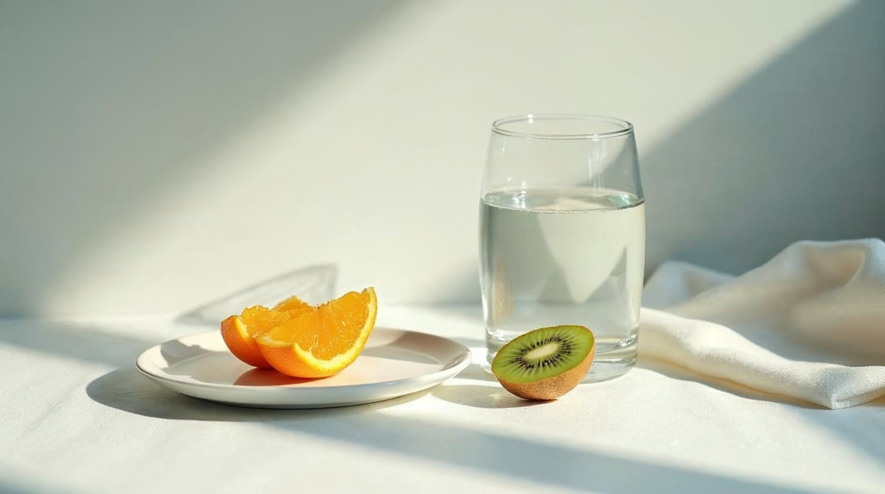
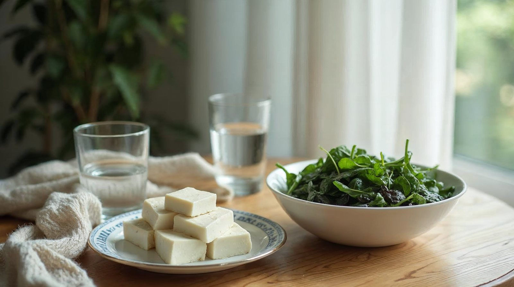
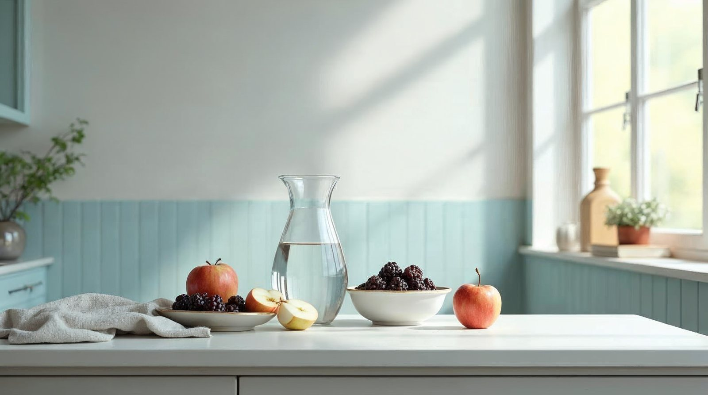
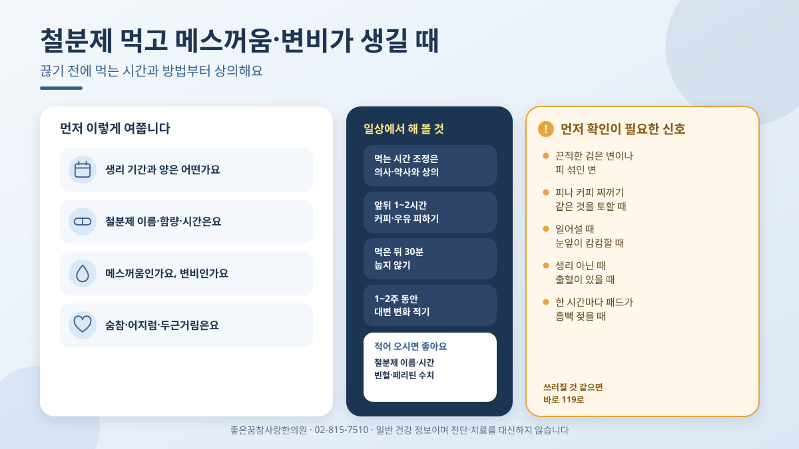

이종호 한의사 감수좋은꿈참사랑한의원 대표원장 (한의사 면허번호 19769)발행 2026-11-27 · 수정 2026-11-27
이 글의 차례
생리 양이 많은 편인데 겨울 들어 계단만 올라도 숨이 차고 어지러워 철분제를 먹기 시작했더니, 아침마다 속이 메스껍고 며칠째 변이 딱딱해져 '이걸 계속 먹어야 하나' 고민하시는 분이 많아요.
먼저 안심하셔도 되는 부분부터요. 철분제는 위를 자극해 메스꺼움과 속쓰림, 변비나 묽은 변을 부를 수 있고, 변 색이 검게 바뀌는 것도 흔히 생기는 변화예요. 원래 그래요. 몸이 약을 이상하게 받는 게 아니라, 철분제가 원래 그런 면이 있는 거거든요.
이럴 때 혼자 끊어 버리기보다 먹는 시간과 함께 먹는 것, 물과 걷기를 먼저 조정해 보세요. 그래도 힘들면 처방한 의사나 약사와 종류나 먹는 방법을 바꿀 수 있는지 상의하시는 게 좋아요.
그런데 사실은 더 중요한 게 따로 있어요. '철을 채우는 것'과 '철을 잃는 것'은 다른 얘기예요. 바닥에 구멍이 난 물통에 물을 부으면 붓는 것보다 새는 게 빠를 수 있잖아요. 출혈이 많은 원인이 그대로라면 철분제로 채우는 속도보다 잃는 속도가 빠를 수 있어요.
그래서 생리 양이 많은 원인은 산부인과에서 확인하고, 빈혈이 어느 정도인지는 혈액 검사로 숫자를 알아 두는 게 순서예요. 다만 짜장처럼 끈적하고 냄새가 심한 검은 변, 배가 심하게 아프거나 토하는 경우, 숨이 차고 어지러움이 점점 심해지는 경우에는 진료를 먼저 받으세요.
왜 철분제를 먹으면 속과 변이 달라질까요
- 흡수되지 않고 남은 철분은 위와 장 점막을 자극할 수 있습니다. 그래서 빈속에 먹을 때 메스꺼움과 명치 쓰림을 더 크게 느끼는 분이 있습니다.
- 장에 남은 철분은 장의 움직임과 장내 환경에 영향을 주어 변을 단단하게 하거나, 사람에 따라 오히려 묽게 만들기도 합니다.
- 흡수되지 않은 철분이 대변과 섞이면 변이 짙은 녹색이나 검은색으로 보일 수 있습니다. 철분제 때문에 생긴 검은 변은 대개 형태가 보통이고 끈적이지 않으며, 복통이나 어지럼이 함께 심해지지 않는다는 점에서 위장 출혈로 인한 검은 변과 구분해 봅니다.
- 겨울에는 물을 덜 마시고 덜 걸어서 원래도 변이 굳기 쉬운데, 철분제가 더해지면 변비가 더 두드러지기 쉽습니다.
- 철분은 빈속에 흡수가 잘 되는 편이라 빈속 복용을 안내받는 경우가 많지만, 그만큼 속 불편도 커지기 쉬워 흡수와 편안함 사이에서 균형을 찾아야 합니다.
- 커피, 녹차, 홍차의 탄닌 성분과 우유·칼슘제, 일부 위산을 줄이는 약은 철분 흡수를 방해할 수 있습니다. 반대로 비타민 C가 든 음식은 흡수를 돕는 쪽으로 알려져 있습니다.
- 생리 양이 많으면 매달 빠져나가는 철이 많아 몸에 저장된 철이 바닥나기 쉽습니다. 빈혈 수치가 정상 범위여도 저장 철을 보여 주는 페리틴이 낮아 피로와 어지럼, 머리카락 빠짐, 잘 부러지는 손톱 같은 변화를 느끼는 분도 있습니다.
- 한의학에서는 생리 양이 많아 피가 부족해진 모습을 혈허(血虛)로 보고, 비위의 기운이 약하면 먹은 것을 피로 만드는 힘이 떨어져 어지럼과 피로가 함께 온다고 설명하기도 합니다. 철분제를 먹을 때 속이 유난히 불편한 분은 평소 소화력도 함께 살펴봅니다.
먼저 이렇게 여쭙니다
- 생리 기간이 며칠인지, 양이 가장 많은 날 패드나 탐폰을 몇 시간마다 바꾸는지, 덩어리가 나오는지, 밤에 새서 깨는지 여쭙니다.
- 생리 양이 언제부터 많아졌는지, 산부인과에서 초음파 같은 검사를 받아 본 적이 있는지 여쭙니다.
- 철분제는 병원에서 처방받았는지 약국에서 샀는지, 이름과 함량, 하루 몇 번, 언제 드시는지 여쭙니다.
- 메스꺼움, 속쓰림, 변비, 묽은 변 가운데 무엇이 불편한지, 먹고 몇 시간 뒤에 나타나는지 여쭙니다.
- 대변 색과 모양, 끈적임, 냄새가 평소와 어떻게 다른지 여쭙니다.
- 빈혈 수치(혈색소)와 페리틴 검사를 받은 적이 있는지, 언제 얼마였는지 여쭙니다.
- 커피와 차, 우유, 칼슘제, 위장약을 철분제와 가까운 시간에 드시는지 여쭙니다.
- 계단을 오를 때 숨참, 어지럼, 가슴 두근거림, 얼음이나 차가운 것이 유난히 당기는 변화가 있는지도 여쭙니다.

일상에서 먼저 해 볼 수 있는 것
먹는 시간과 방법 조정하기(처방받았다면 먼저 의사·약사와 상의)
- 빈속에 먹을 때 메스껍다면, 처방한 의사나 약사에게 식사 직후나 식사 도중으로 옮겨도 되는지 물어봅니다. 흡수가 조금 줄더라도 꾸준히 먹을 수 있는 쪽이 도움이 된다는 안내를 받는 경우가 많습니다.
- 아침에 먹을 때 메스껍다면 저녁 식사 뒤로 옮겨 볼 수 있는지 함께 물어봅니다. 잠들기 직전에 먹고 바로 누우면 속쓰림이 심해질 수 있어 잠들기 1~2시간 전까지 먹는 편이 좋습니다.
- 하루 여러 번 먹으라는 안내를 받았는데 힘들다면, 횟수나 함량, 제형(알약, 액상 등)을 바꾸는 방법이 있는지 상의합니다. 같은 철분제라도 종류에 따라 속 편한 정도가 다를 수 있습니다.
- 알약은 물 한 컵과 함께 삼키고, 먹은 뒤 30분 정도는 눕지 않습니다.
함께 먹는 것 정리하기
- 철분제를 먹기 앞뒤 1~2시간은 커피, 녹차, 홍차, 우유, 칼슘제를 피합니다. 아침 커피 습관이 있다면 철분제와 시간을 떼어 놓습니다.
- 위산을 줄이는 약이나 갑상선약, 일부 항생제처럼 철분과 간격을 두어야 하는 약을 드신다면 시간을 어떻게 나눌지 약사에게 확인합니다.
- 철분제를 먹을 때 귤이나 키위처럼 비타민 C가 든 과일 한 조각을 곁들이도록 안내받는 경우가 있습니다. 다만 빈속에 신 과일이 속을 더 쓰리게 한다면 식사 뒤로 옮깁니다.
- 끼니마다 살코기, 생선, 달걀, 두부, 콩, 시금치처럼 철이 든 음식을 한 가지씩 넣습니다. 음식만으로 부족분을 다 채우기는 어렵지만 바탕이 됩니다.
변비 줄이기
- 물을 하루 1.5L 안팎으로 나눠 마십니다. 겨울에는 미지근한 물이나 보리차를 책상 위에 두고 한 시간에 반 컵씩 마시는 식으로 챙깁니다.
- 아침 식사 뒤 정해진 시각에 화장실에 5분쯤 앉아 봅니다.
- 잡곡, 채소, 해조류, 사과나 배 같은 과일을 끼니마다 조금씩 늘립니다. 갑자기 많이 늘리면 가스가 찰 수 있어 천천히 늘립니다.
- 하루 20~30분 걷습니다. 점심 뒤 10분, 퇴근길 한 정거장 먼저 내려 걷기처럼 나눠도 됩니다.
생리 기간 몸 챙기기
- 생리 양이 많은 날에는 무리한 운동이나 오래 서 있는 일을 줄이고, 잠을 평소보다 30분이라도 더 잡니다.
- 생리 기간과 그다음 주에 어지럼이 심해지는지 기록합니다.
- 생리 양이 많은 날 몇 시간마다 패드를 갈았는지 달력에 숫자로 적어 둡니다. 산부인과 상담 때 그대로 보여 드리면 됩니다.

상황별 예시
- 예를 들어 생리 양이 많은 날 한두 시간마다 패드를 갈아야 하는 30대 직장인이, 겨울 들어 지하철 계단에서 숨이 차 약국에서 철분제를 사 아침 빈속에 먹다가 출근길마다 메스꺼운 경우, 약사에게 저녁 식사 뒤로 옮겨도 되는지 묻고 아침 커피와 시간을 떼어 놓아 봅니다. 그와 함께 산부인과에서 생리 양이 많은 이유를, 혈액 검사로 빈혈 정도를 확인해 둡니다.
- 예를 들어 병원에서 철결핍성 빈혈 진단을 받고 철분제를 처방받았는데 일주일 사이 변이 딱딱해져 사나흘에 한 번밖에 못 보는 경우, 철분제를 임의로 끊기보다 물과 채소, 걷기를 늘리고, 그래도 힘들면 처방한 의사에게 종류나 먹는 방법을 바꿀 수 있는지 상의합니다.
- 예를 들어 철분제를 먹은 뒤 변이 검게 나와 놀랐는데, 모양은 평소와 같고 끈적이지 않으며 배가 아프거나 어지럼이 심해지지 않은 경우, 철분제로 인한 색 변화일 가능성이 있어 기록하며 지켜봅니다. 반대로 짜장처럼 끈적하고 냄새가 심하며 어지럼이나 복통이 함께라면 바로 진료를 받습니다.
- 예를 들어 노량진에서 공부하는 수험생이 끼니를 자주 거르고 생리 양도 많아 늘 어지러운데, 철분제만 먹으면 속이 쓰려 며칠 먹다 말기를 반복하는 경우, 먼저 하루 세끼 시간을 정해 단백질 반찬을 한 가지씩 넣고, 철분제는 식사 뒤로 옮겨 볼 수 있는지 약사와 상의합니다.
자주 하는 오해
- 철분제를 먹으면 생리 양이 많은 문제도 해결된다고 여기기 쉽지만, 철분제는 빠진 철을 채우는 역할이고 생리 양이 많은 이유는 따로 확인해야 합니다.
- 변이 검게 나오면 곧 출혈이라고 걱정하는 분도 있는데, 철분제 때문에 색이 짙어지는 일은 흔합니다. 다만 끈적임과 냄새, 어지럼과 복통이 함께인지로 구분해 보고, 헷갈리면 진료를 받습니다.
- 어지럼이 사라지면 철분제를 바로 끊어도 된다고 생각하기 쉽지만, 혈색소가 먼저 회복되고 저장 철은 그 뒤에 천천히 채워지는 경우가 많아, 언제까지 먹을지는 혈액 검사 결과를 보고 의사와 정합니다.
- 철분은 많이 먹을수록 좋다고 여기기 쉽지만, 필요 이상으로 오래 많이 먹으면 몸에 쌓여 부담이 될 수 있어 검사 없이 고용량을 오래 이어 가지 않습니다.
- 커피와 함께 먹어도 상관없다고 생각하는 분이 많은데, 커피와 차는 철분 흡수를 방해할 수 있어 시간을 떼어 두는 편이 좋습니다.
스스로 점검해 보세요
- 생리 양이 가장 많은 날 한두 시간마다 패드를 갈거나, 밤에 새서 깬 적이 있다.
- 생리 기간이 7일 넘게 이어지거나, 손가락 마디만 한 덩어리가 자주 나온다.
- 철분제를 빈속에 먹고 메스꺼움이나 속쓰림을 느낀다.
- 철분제를 먹기 시작한 뒤 변이 딱딱해지고 배변 간격이 길어졌다.
- 철분제와 커피, 차, 우유를 가까운 시간에 함께 마신다.
- 빈혈 수치나 페리틴 검사를 받은 지 1년이 넘었거나 받아 본 적이 없다.
- 산부인과에서 생리 양이 많은 이유를 확인해 본 적이 없다.

한의원에서 함께 살필 수 있는 경우
- 산부인과와 내과에서 필요한 검사를 받은 뒤, 생리 기간의 피로와 어지럼, 손발 냉기를 함께 살피고 싶은 경우
- 철분제를 먹을 때마다 속이 불편해 평소 소화력과 식사 습관을 함께 돌아보고 싶은 경우
- 생리 전후로 잠이 얕아지고 기운이 떨어지는 흐름이 매달 반복되는 경우
- 겨울 들어 손발이 차고 변이 굳으며 아랫배가 묵직한 느낌이 함께 있는 경우
좋은꿈참사랑한의원에서는 첫 방문 때 생리 주기와 양, 기간, 덩어리 여부, 철분제의 이름과 먹는 시간, 속 불편과 대변 변화, 산부인과·내과 검사 결과를 먼저 여쭙고, 식사와 잠, 물, 걷기도 함께 정리합니다.
그다음 맥부터 짚어 보고, 혀의 색과 설태, 배를 눌렀을 때 아랫배가 차거나 단단한 곳이 있는지 살펴 피가 부족한 정도와 소화 상태를 함께 확인합니다. 필요하면 원내 혈액 검사기로 함께 볼 수 있는 항목이 있는지, 인바디 770으로 체성분을 볼지 상의하며, 검사 가능한 항목과 준비는 방문 전 전화로 확인해 주세요.
그 결과를 바탕으로 철분제를 먹는 시간과 식사, 변비를 줄이는 생활을 함께 정하고, 필요하면 침이나 한약을 상의합니다. 임신 중이거나 수유 중이시거나 드시는 약이 있다면, 한약은 상담에서 하나씩 확인한 뒤 정합니다. 생리 양이 갑자기 늘었거나 빈혈이 심해 보이면 산부인과와 내과 진료를 먼저 안내해 드립니다.
다시 오시면 지난 생리 주기의 기록과 철분제를 먹으며 달라진 점을 이어서 봅니다.
얼마나 지켜보고 언제 상담할까요
- 먹는 시간과 함께 먹는 것, 물과 걷기를 바꾼 뒤 1~2주 동안 메스꺼움과 대변 변화를 기록해 봅니다.
- 그래도 메스꺼움이나 변비가 심해 철분제를 이어 먹기 어렵다면, 끊기 전에 처방한 의사나 약사와 종류나 먹는 방법을 바꿀 수 있는지 상의합니다.
- 철분제를 먹는 동안 혈액 검사를 언제 다시 할지는 처방한 의사의 안내를 따릅니다. 따로 안내가 없었다면 다음 진료 때 물어보세요.
- 생리 양이 많은 이유를 아직 확인하지 않았다면 이번 생리 주기가 지나기 전에 산부인과 진료를 잡아 둡니다.
이렇게 기록해 오시면 상담이 쉬워집니다
생리 양은 말로 설명하기가 참 어려워요. '많다'의 기준이 사람마다 다르거든요. 그래서 패드를 간 간격처럼 숫자로 남겨 두시면 산부인과에서도, 저희 진료실에서도 이야기가 훨씬 정확해져요.
- 최근 2~3번의 생리 시작일과 기간, 양이 가장 많은 날 패드를 간 간격
- 철분제 이름과 함량, 먹는 시간, 함께 먹는 음식과 음료
- 메스꺼움, 속쓰림, 변비, 묽은 변이 나타난 날과 정도
- 대변 색과 모양(필요하면 사진)
- 혈색소, 페리틴 같은 혈액 검사 결과와 산부인과 검사 결과
- 복용 중인 약과 영양제, 임신 가능성이나 수유 여부
두세 번의 주기만 적어 보셔도, 철분제를 먹는 시간과 속 불편, 변비가 어떻게 이어지는지가 보여요. 그 흐름이 먹는 방법을 바꿀지, 처방한 의사와 종류를 상의할지를 정하는 데 도움이 됩니다.
몸 전체를 살피는 건 제가 맡을게요. 대신 하나만 부탁드려요. 철분제가 불편하다고 혼자 끊지 마시고, 먹는 시간부터 바꿔서 적어 봐 주세요. 그거 하나예요. 딴 건 하시던 대로 편하게 하셔도 돼요.
임신 가능성이 있거나 수유 중이시면 먼저 말씀해 주세요. 궁금한 건 오셔서 그냥 편하게 물어보세요. 지난 주기 기록을 같이 펼쳐 놓고 차근차근 보겠습니다.
이런 증상은 먼저 확인이 필요합니다
- 짜장처럼 까맣고 끈적하며 냄새가 심한 변, 또는 피가 섞인 변을 보는 경우
- 배가 심하게 아프거나 토하는 경우, 피나 커피 찌꺼기 같은 것을 토하는 경우
이런 신호가 있으면 한의원보다 가까운 병원이나 응급실을 먼저 찾으세요.
관련 글
- 생리 양이 많고 피곤할 때는 무엇을 먼저 확인하나요?
- 어지럽고 숨이 차고 얼굴이 창백할 때 여성이 먼저 확인할 것은 무엇인가요?
- 겨울에 대변이 더 단단해지고 횟수가 줄어드는 것은 어떻게 살피나요?

여쭙는 것
- 생리 기간이 며칠인지, 양이 가장 많은 날 패드나 탐폰을 몇 시간마다 바꾸는지, 덩…
- 생리 양이 언제부터 많아졌는지, 산부인과에서 초음파 같은 검사를 받아 본 적이 있는…
- 철분제는 병원에서 처방받았는지 약국에서 샀는지, 이름과 함량, 하루 몇 번, 언제…
생활에서 해 볼 것
- 빈속에 먹을 때 메스껍다면, 처방한 의사나 약사에게 식사 직후나 식사 도중으로 옮겨…
- 아침에 먹을 때 메스껍다면 저녁 식사 뒤로 옮겨 볼 수 있는지 함께 물어봅니다. 잠…
- 하루 여러 번 먹으라는 안내를 받았는데 힘들다면, 횟수나 함량, 제형(알약, 액상…
한의원에서 함께 살필 것
- 산부인과와 내과에서 필요한 검사를 받은 뒤, 생리 기간의 피로와 어지럼, 손발 냉기…
- 철분제를 먹을 때마다 속이 불편해 평소 소화력과 식사 습관을 함께 돌아보고 싶은 경우
- 생리 전후로 잠이 얕아지고 기운이 떨어지는 흐름이 매달 반복되는 경우
먼저 확인이 필요한 신호
- 짜장처럼 까맣고 끈적하며 냄새가 심한 변, 또는 피가 섞인 변을 보는 경우
- 배가 심하게 아프거나 토하는 경우, 피나 커피 찌꺼기 같은 것을 토하는 경우
한눈에 보는 표
| 구분 | 핵심 |
|---|---|
| 여쭙는 것 | 생리 기간이 며칠인지, 양이 가장 많은 날 패드나 탐폰을 몇 시간마다 바꾸는지, 덩어리가 나오는지, 밤에 새서 깨는지 여쭙니다. 생리 양이 언제부터 많아졌는지, 산부인과에서 초음파 같은 검사를 받아 본 적이 있는지 여쭙니다. |
| 생활에서 해 볼 것 | 빈속에 먹을 때 메스껍다면, 처방한 의사나 약사에게 식사 직후나 식사 도중으로 옮겨도 되는지 물어봅니다. 흡수가 조금 줄더라도 꾸준히 먹을 수 있는 쪽이 도움이 된다는 안내를 받는 경우가 많습니다. 아침에 먹을 때 메스껍다면 저녁 식사 뒤로 옮겨 볼 수 있는지 함께 물어봅니다. 잠들기 직전에 먹고 바로 누우면 속쓰림이 심해질 수 있어 잠들기 1~2시간 전까지 먹는 편이 좋습니다. |
| 한의원에서 함께 살필 것 | 산부인과와 내과에서 필요한 검사를 받은 뒤, 생리 기간의 피로와 어지럼, 손발 냉기를 함께 살피고 싶은 경우 철분제를 먹을 때마다 속이 불편해 평소 소화력과 식사 습관을 함께 돌아보고 싶은 경우 |
| 먼저 확인이 필요한 신호 | 짜장처럼 까맣고 끈적하며 냄새가 심한 변, 또는 피가 섞인 변을 보는 경우 배가 심하게 아프거나 토하는 경우, 피나 커피 찌꺼기 같은 것을 토하는 경우 |
자주 묻는 질문
철분제를 먹고 변이 검게 나오는데 괜찮은가요?
철분제 때문에 변이 짙은 녹색이나 검은색으로 보이는 일은 흔합니다. 모양이 보통이고 끈적이지 않으며 복통이나 어지럼이 없다면 기록하며 지켜보고, 짜장처럼 끈적하고 냄새가 심하거나 어지럼이 함께라면 바로 진료를 받으세요.
속이 메스꺼우면 철분제를 끊어도 되나요?
혼자 끊기보다 먹는 시간을 식사 뒤로 옮기거나 종류를 바꿀 수 있는지 처방한 의사나 약사와 먼저 상의해 보세요. 빈혈이 있다면 꾸준히 채우는 것이 중요해 이어 갈 수 있는 방법을 찾는 편이 좋습니다.
철분제는 언제까지 먹어야 하나요?
혈색소가 먼저 회복되고 저장 철은 그 뒤에 천천히 채워지는 경우가 많아, 기간은 혈액 검사 결과를 보고 처방한 의사가 정합니다. 검사 없이 고용량을 오래 이어 가지는 않습니다.
생리 양이 많은 건 어디서 확인하나요?
생리 양이 많은 이유는 산부인과에서 진찰과 초음파 같은 검사로 확인합니다. 패드를 간 간격과 기간, 덩어리 여부를 달력에 적어 가면 상담이 쉬워집니다.
한약을 철분제와 함께 먹어도 되나요?
철분제와 한약을 함께 드실 수 있는지, 시간 간격을 어떻게 둘지는 진료 때 드시는 약을 확인하고 정합니다. 임신 중이거나 수유 중이거나 다른 약을 드신다면 상담에서 함께 확인해 주세요.
좋은꿈참사랑한의원은 재진 때 지난번 이야기부터 이어서 여쭙니다. 진료시간과 예약은 오시는 길에서 확인하세요.
어디서 상담받을 수 있나요?
좋은꿈참사랑한의원은 서울 동작구 만양로2길 2 신성빌딩 3층·5층(서울 동작구 상도동, 7호선 상도역 3번 출구 근처)에 있습니다. 한의사 3명(이종호 대표원장, 조영기 수석진료원장, 정원영 진료원장)이 진료합니다. 진료시간은 평일 09:30~20:00(점심 13:00~14:00), 토·일·공휴일 09:30~15:00이며, 방문 전 전화로 확인을 권합니다. 예약은 네이버 예약, 카카오톡 상담, 전화 02-815-7510로 받습니다.
이 글은 일반적인 건강 정보이며 개인의 진단이나 치료를 대신하지 않습니다. 증상이 있거나 복용 중인 약이 있다면 진료를 통해 확인하세요. 치료 효과는 개인마다 다를 수 있습니다.
작성 기준: 일반적으로 알려져 있는 건강 정보를 참고해 정리했습니다(대표원장 감수). 증상 기록은 1~2주 동안 하루 1회, 비슷한 시간에 적어 오시면 지난 상태와 비교하기 쉽습니다.